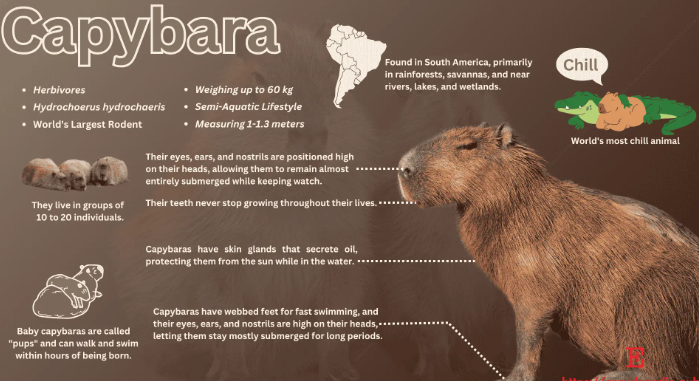

×

My friend the crocodile has a capybara baby subscription.
We capybaras aren't that good of parents, we sacrifice our children to crocodiles in case of an attack.
Anyway, thanks for following that capy. I was just bored. Oh you might wanna check out the next page...
Anyway, thanks for following that capy. I was just bored. Oh you might wanna check out the next page...

🏠 Anatomy